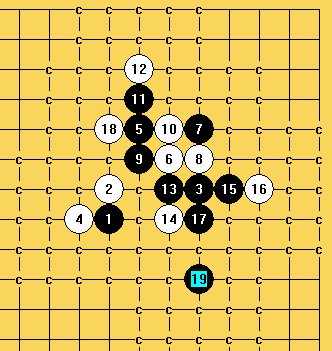
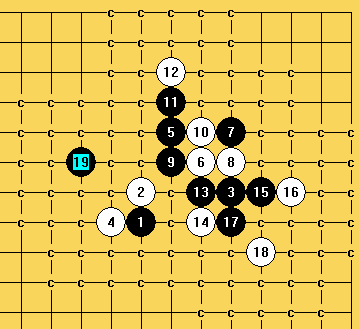

残月刀这个14怎么杀？
#1 残月刀这个14怎么杀？作者：零零星星 发表时间：2009-5-1 16:32:57
请高手指点
=======上图对应的爱五子棋谱代码如下，以便你拆解：========
h8h9k9g8i11j10k11k10i10j11i12i13j9j8
======================================================
#2 Re:残月刀这个14怎么杀？作者：学生刀 发表时间：2009-5-1 18:54:34
=======上图对应的爱五子棋谱代码如下，以便你拆解：========
h8h9k9g8i11j10k11k10i10j11i12i13j9j8j6
======================================================
随便下吧
#3 Re:残月刀这个14怎么杀？作者：学生刀 发表时间：2009-5-1 21:35:22
就我一个人发言 都不会杀啦？ 哈哈#4 Re:残月刀这个14怎么杀？作者：零零星星 发表时间：2009-5-1 21:40:48
 是不是杀不得啊？我拆不了啊
是不是杀不得啊？我拆不了啊
#5 Re:残月刀这个14怎么杀？作者：学生刀 发表时间：2009-5-1 21:47:19
我那个15不错的
#6 Re:残月刀这个14怎么杀？作者：零零星星 发表时间：2009-5-1 21:50:32
呵呵，可是没拆出来#7 Re:残月刀这个14怎么杀？作者：26 发表时间：2009-5-1 22:00:04
=======上图对应的爱五子棋谱代码如下，以便你拆解：========
h8h9k9g8i11j10k11k10i10j11i12i13j9j8l9m9f10
======================================================
参考。
#8 Re:残月刀这个14怎么杀？作者：自来水 发表时间：2009-5-1 23:46:50
这题……复杂
先给个结论

#9 Re:残月刀这个14怎么杀？作者：自来水 发表时间：2009-5-2 0:09:30
第一个图没啥可说的,黑应该都易胜
第二个图有这样几个变化
=======上图对应的爱五子棋谱代码如下，以便你拆解：========
h8h9k9g8i11j10k11k10i10j11i12i13j9j8l9m9k8l7f10h11g9e11g7
======================================================
=======上图对应的爱五子棋谱代码如下，以便你拆解：========
h8h9k9g8i11j10k11k10i10j11i12i13j9j8l9m9k8l7f10j13e11g9h11g12g10
======================================================
=======上图对应的爱五子棋谱代码如下，以便你拆解：========
h8h9k9g8i11j10k11k10i10j11i12i13j9j8l9m9k8l7f10g9g10h11i9i8e10h10d10c10e9
======================================================
差不多难的就这些,其他LZ自己去搞吧
#10 Re:残月刀这个14怎么杀？作者：nara 发表时间：2009-5-2 0:19:50
看来杀法还不少啊！呵呵！
=======上图对应的爱五子棋谱代码如下，以便你拆解：========
h8h9k9g8i11j10k11k10i10j11i12i13j9j8h11g12f10
======================================================
上图这个胜法可能简单点。 残月刀这个14.rar
残月刀这个14.rar
=======上图对应的爱五子棋谱代码如下，以便你拆解：========
h8h9k9g8i11j10k11k10i10j11i12i13j9j8f10
======================================================
这个15可能复杂点！残月刀这个14 2.rar
做了两个谱，大家看看吧，有错漏的话，再交流下！
［ 潇洒 于 2009-5-2 0:58:43 时奖励此帖[金币加 20 威望加1］
#11 Re:残月刀这个14怎么杀？作者：零零星星 发表时间：2009-5-2 0:46:23
谢谢各位的解答，可惜我的钱不够送花啊
#12 Re:残月刀这个14怎么杀？作者：自来水 发表时间：2009-5-2 0:52:55
……这里黑胜法确实不少，复杂程度各有不同罢了
感觉LS超强的……第二个谱我是没心思去走这样的变化